¶ Roller Bearings use precisely made steel balls or cylinders to allow a shaft to turn with very little friction. In most applications the balls or rollers are caged so they will stay in place. There are many different sizes and types of Roller Bearings. They are used all over a motorcycle on Rods, Camshafts, Transmission Shafts, Main Bearings, anywhere a shaft needs to turn AND anywhere lubrication could be marginal.
The main style of Roller Bearing used on motorcycles is the Ball Bearing. The Ball Bearing uses, as you might guess, precision made steel balls. There are three basic styles of Ball Bearing.
- Unshielded.
- Shielded with a steel shield on one or both sides.
- Shielded with a rubber shield on one or both sides.
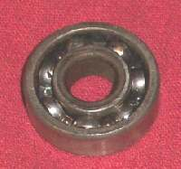 No Shield. |
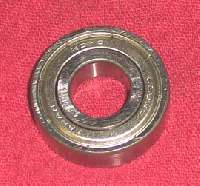 Steel Shield. |
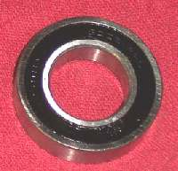 Rubber Shield. |
Unshielded Bearings work well for Two Stroke Crankshafts. They are lubricated by the oil in the gas. They are also used in transmissions and camshafts. These are lubricated by engine oil.
Shielded bearings work good where there is limited outside lubrication like wheel bearings. They are pre-lubed with grease. If they have a rubber shield you can usually pop it off and relube the bearing. Steel bearing shields are very difficult to remove and are usually so deformed by removal that you can't reuse them.
Sometimes, Ball Bearings can be a very tight fit on their shafts. If you pull them off a shaft and want to reuse them you MUST apply pressure to the inner bearing race. If you apply pressure to the outside race you run the risk of ruining the bearing and bearing failure can cause all kinds of nasty problems. If you must pull with the outside race, replace the bearing.
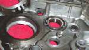
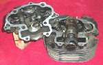
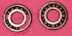
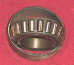 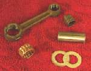

You can measure the inner race diameter, outer race diameter, and width of a bearing and find out it's size. The size is sometimes stamped on the side of the bearing and sometimes not. At one time all the good bearings came from the USA or Germany. Now everyone seems to be making them. I once asked a friend at a big bearing sales company about this and also where were the best bearings to be found. He said he felt it didn't make much difference where you got your bearings from. He said all the bearing where made with automatic machinery. If the bearing came from some weird third world country, odds are they had new machines and the bearings were OK. I've put bearings from a lot of strange countries in a lot of different machines. I've never had any problems with any of them, so I guess he was right. I was once told that aircraft Ball Bearings were made to more exacting specifications and therefore ran with less friction. This in turn gave more horsepower. This may have been true in the past but as my Bearing House friend said, they are all made on newer, very accurate, machines now. Just use bearings from a reputable distributor and they will work just fine, no matter where they were made.
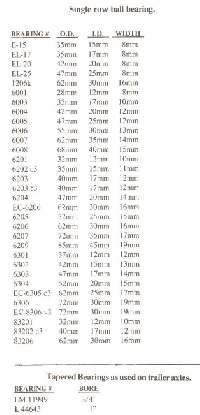 Bearing Sizes. |
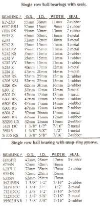 Bearing Sizes. |
For a PDF file to print out these charts click


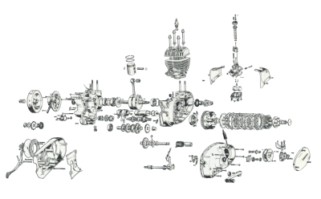 |
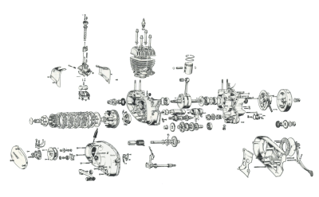 |
Copyright © 1999-2006 dansmc.com. All rights reserved.